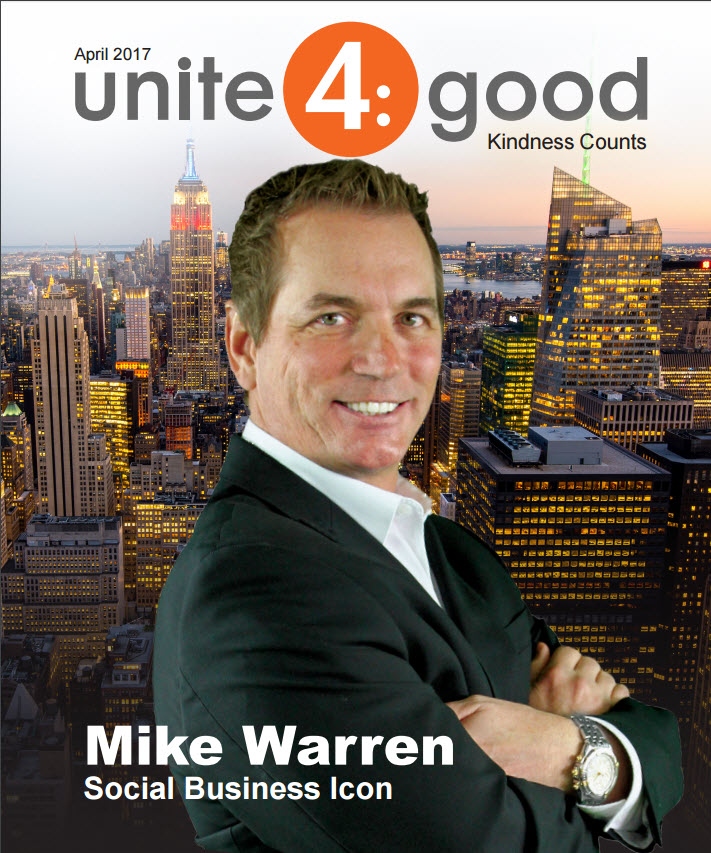

Give Back
Business builds freedom. Freedom builds responsibility. Mike believes the real measure of success is what you do with it after you've made it.
Rebuilding Schools in the Dominican Republic
Mike has participated in hands-on volunteer projects in Punta Cana, Dominican Republic, helping rebuild schools for children who lack access to basic educational infrastructure. Not writing a check from a boardroom. Picking up a drill, working alongside local families, and getting the job done.
These aren't photo opportunities. They're commitments. When you've spent your career helping people acquire businesses and build wealth, there's a responsibility to reinvest that energy where it matters most.

Social Business Icon
In 2017, Mike was recognized by Unite4:Good as a "Social Business Icon" for his commitment to using business as a force for positive change. The Unite4:Good organization, founded on the principle that kindness counts, spotlighted Mike's work bridging the gap between entrepreneurial success and community impact.

The recognition wasn't for a single event or donation. It was for a pattern: consistently showing up, consistently giving back, and consistently using the platform that business success provides to create opportunities for people who don't have the same access.
Mike's philosophy is straightforward: if you have the ability to help, you have the obligation to help. Business ownership creates the freedom. What you do with that freedom defines you.
"Success without purpose is just accounting. The whole point of building something is to have the freedom to give back."
Boots2Suits
Mike is a supporter of Boots2Suits, an organization dedicated to helping military veterans transition from service to civilian careers in business. The program provides mentorship, professional development, and networking opportunities to veterans who have the discipline and work ethic to succeed in business but need guidance on where to start.
For Mike, this hits close to home. Many of the professionals he works with through BizBuyEmpire share that same profile: driven people with transferable skills who need a framework, not motivation. Veterans fit that description better than almost anyone.
What's Next
Mike continues to look for opportunities to connect business success with community impact. Whether it's mentoring young entrepreneurs, supporting educational infrastructure in underserved communities, or helping veterans find their path into business ownership, the mission stays the same: use what you've built to build something bigger than yourself.